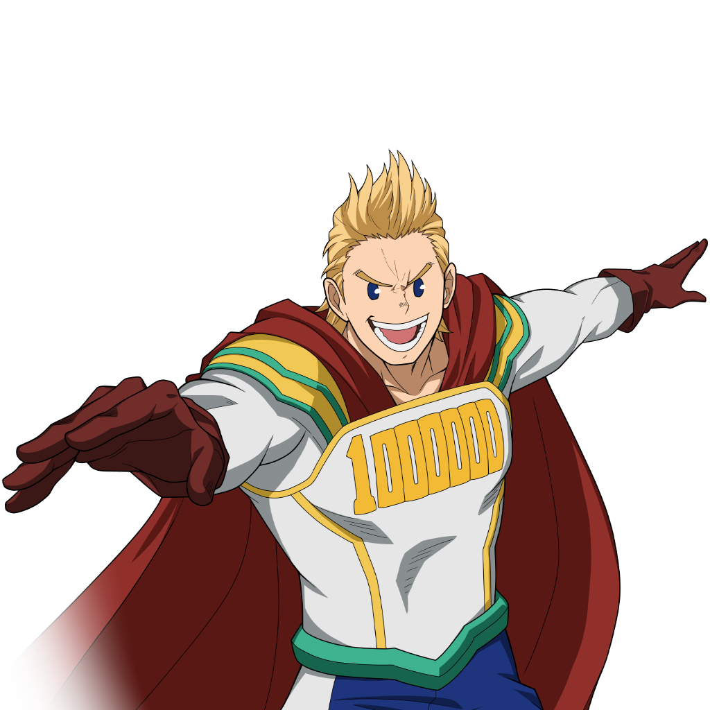

Su informacion principal
Nombre: Mirio Togata
Quirk: Permeacion
Es un poder que le permite atravesar todo, con algunas desventajas.
Wiki con informacion mas detallada de MirioEs un poder que le permite atravesar todo, con algunas desventajas.
Wiki con informacion mas detallada de MirioHabilidad que le permite hacer un dash, pudiendo ataques continuos al enemigo.
Si se mantiene se hara un dash mas largo y mas rapido,
con este pudiendo atravesar estructuras.
Habilidad que hace que Mirio active su Quirk y se adentre al suelo, de esta manera pudiendo
desplazarse a gran velocidad bajo el suelo, pudidendo atravesar estructuras.
Tiene un porcentaje de durabilidad que al quedar en cero
saldra del piso haciendo daño en un area pequeña.
Se debe mantener el boton asignado y cuando se suelte, mirio saldra de la tierra haciendo
su ataque.
Habilidad que hace que Mirio active un escudo semi-esferico alrededor de su cuerpo, con su capa
asi pudiendo protegerse a si mismo de ataques enemigos y a sus compañeros.
Tiene un porcentaje de durabilidad
Se tiene que mantener el boton asignado para que la habilidad pueda seguir activa, al soltarlo
se desactivara el escudo.
Habilidad que hace que Mirio active su Quirk por cierto tiempo, pudiendo atravesar todo menos el piso,
con la desventaja de no poder
atacar o recoger cosas, pero logrando no recibir ningun tipo de daño.
Si se usa el boton de apuntar
y se mira a un compañero hasta cierta distancia, se podra presionar el boton de la
habilidad especial para ir atravesando todo hacia el compañero, como desventaja de gastar
todo el porcentaje.
| Habilidad | Daño | Cargas |
|---|---|---|
| Alpha | 45PerHit/150Charge | 3 |
| Beta | 170 | 1 (100%) |
| Gamma | 110 | 1 (100%) |
| Especial | 0 | 100% |